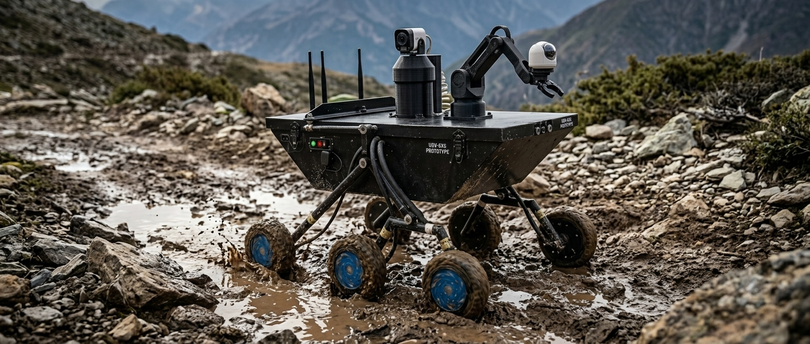
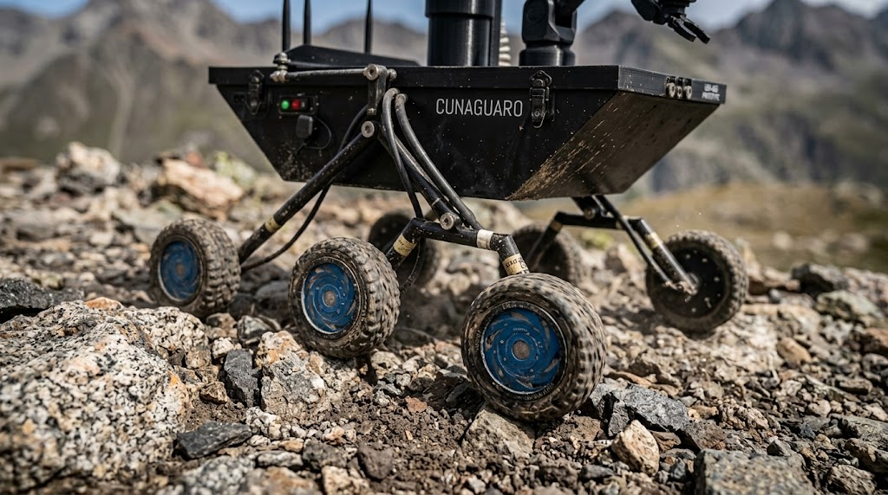
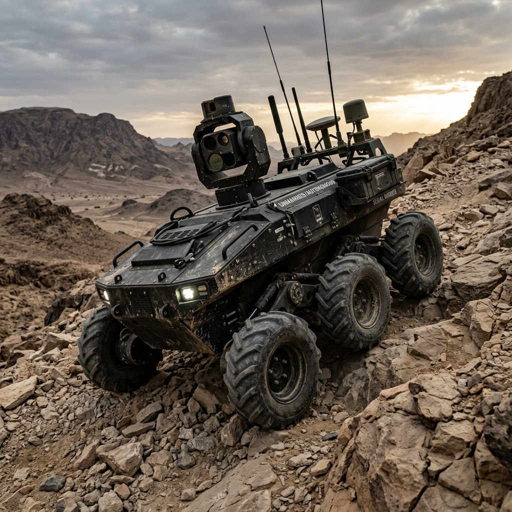
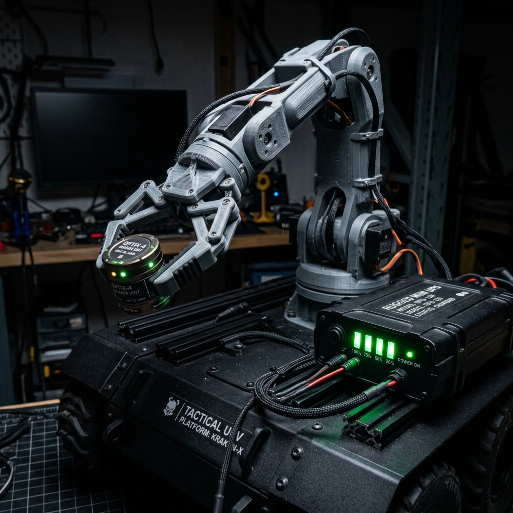

Vehículo Terrestre no Tripulado CUNAGUARO de exploración para misiones críticas en terrenos hostiles, diseñado para recolección de inteligencia, reconocimiento perimetral y manipulación segura a distancia.

Diseñado para superar barreras geográficas extremas donde los vehículos convencionales quedan inmovilizados.

Absorción dinámica del 100% de irregularidades del terreno manteniendo la cabina de sensores nivelada.
Construcción reforzada a prueba de impactos y deformaciones mecánicas. Estructura de alta rigidez torsional diseñada para proteger el núcleo electrónico y las baterías.
Distribución de par neumático independiente en las 6 ruedas. Permite escalar rocas de gran dimensión manteniendo estabilidad absoluta sin volcamiento.
Sellado estanco electromecánico preparado para cruce de cauces de agua de bajo calado, lechos fangosos, escombros urbaniados y pendientes empinadas.
Procesamiento de IA a bordo impulsado por Raspberry Pi 5 y Google MediaPipe Studio para asistencia autónoma en decisiones tácticas.
Google MediaPipe Studio Active // Detección de Objetos en Tiempo Real // 60 FPS

Procesamiento de cómputo de alta eficiencia impulsado por MediaPipe Studio. Agentes inteligentes analizan transmisiones de video para alertar anomalias en campo.
Sensor inercial BNO055 integrado con giroscopio, acelerómetro y magnetómetro de 9 grados de libertad para estabilización de navegación dinámica y telemetría GPS.
Resistencia eléctrica ininterrumpida y brazo articulado para interacciones tácticas a distancia.
Sistema de respaldo de alta densidad energética que garantiza 1 hora continua de autonomía a plena carga operativa de motores, cómputo e iluminación IR, previniendo caídas de tensión (Zero Voltage Drop).
Manipulador articulado multieje fabricado mediante impresión 3D de polímero técnico de alto impacto. Permite la sujeción, traslado y desactivación de objetos sospechosos a distancia segura para el operador.
